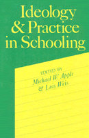

<body bgcolor="#FFFFFF" text="#000000" link="#0000FF" vlink="#CC0000" alink="#CC0000"><center><hr width="350" size="1" align="center" noshade>Investigations of the content and organization of the curriculum and experience of teachers and students in schools<hr width="350" size="1" align="center" noshade><p><a href="https://cdcshoppingcart.uchicago.edu/Cart/ChicagoBook.aspx?ISBN=9780877222958&&PRESS=temple" target="_top">Buy this book!</a> | <a href="https://cdcshoppingcart.uchicago.edu/Cart/Cart.aspx?PRESS=temple" target="_top">View Cart</a> | <a href="https://cdcshoppingcart.uchicago.edu/Cart/Cart.aspx?PRESS=temple" target="_top">Check Out</a></p><p></p></center><!--none//--><h1>Ideology and Practice in Schooling</h1>
<h3>edited by Michael W. Apple and Lois Weis</h3>
<P>cloth 0-87722-295-9 $34.95, May 83, <FONT COLOR=#990033>Out of Print</FONT>
<br>paper 0-87722-313-0 $22.95, May 83, <FONT COLOR=#990033>Out of Print</FONT>
<BR> 286 pp
6x9
</P><BLOCKQUOTE><I>"[This] does more to clarify what schools actually do, and why most American research on education leaves us with our myths about schooling intact, than anything that has been published in America."</I>
<br>&#151<b>Edgar Z. Friedenberg</b>, Dalhousie University<I></I></BLOCKQUOTE>
<P>Over the past decade there has been much theoretical work on the relationship between schooling and economic and cultural reproduction. A good deal of this research has remained outside the school, not going inside to examine the actual curriculum and teaching practices that go on every day in the classroom.
<P><I>Ideology and Practice in Schooling</I> brings together investigations of the content and organization of the curriculum and the experience of teachers and students in schools. Included are ideological analyses of history, art, literature, economics, and science curricula, as well as ethnographic studies of the lived culture of student oppositional practices, changes in the control of teachers' work, the experience of minority students at community colleges, of girls in a secretarial training program, and of children in primary schools. Each original essay blends together recent work on the nature of the relationship between society and education with an in-depth examination of the internal practices of schooling, and also points out where there are possibilities for emancipatory educational action.
<BR>&nbsp;<h2>Excerpt</h2><P>Excerpt available at <a href="http://www.temple.edu/tempress">www.temple.edu/tempress</a></p>
<BR>&nbsp;<h2>Reviews</h2>
<p><I>"[A] significant contribution to an important growing body of radical literature on education that can provide interested educators with a deeper understanding of the linkages between theory and practice and with a better sense of how classroom practices aid in the production and reproduction of social classes."</I>
<br>&#151<b><I>Educational Studies</I></b>
<BR>&nbsp;<h2>Contents</h2><P>
<p>Acknowledgements
<br>Contributors
<p><b>Introduction</b>
<br>1. Ideology and Practice in Schooling: A Political and Conceptual Introduction &#150 Michael W. Apple and Lois Weis
<p><b>Part I. Ideology and Commodified Culture</b>
<br>2. Workers, Labor and Economic History, and the Textbook Content &#150 Jean Anyon
<br>3. The American Revolution in Children's Fiction: An Analysis of Literary Content, Form, and Ideology &#150 Joel Taxel
<br>4. Aesthetic Curriculum and Cultural Reproduction &#150 Landon E. Beyer
<br>5. Defensive Teaching and Classroom Control &#150 Linda M. McNeil
<br>6. Curricular Form and the Logic of Technical Control &#150 Michael W. Apple
<p><b>Part II. Ideology and Lived Culture</b>
<br>7. Classroom Management, Student Opposition, and the Labor Process &#150 Robert B. Everhart
<br>8. School Structure and Teachers' Work &#150 Andrew Gitlin
<br>9. Becoming Clerical Workers: Business Education and the Cutlure of Femininity &#150 Linda Valli
<br>10. Schooling and Cultural Production: A Comparison of Black and White Lived Culture &#150 Lois Weis
<br>11. Play in the Workplace &#150 Nancy R. King
<p>Index
</P><BR>&nbsp;<H2>About the Author(s)</H2>
<P><B>Michael W. Apple</B></A> is Professor of Curriculum and Instruction and Educational Policy Studies at the University of Wisconsin, Madison.</P>
<P><B>Lois Weis</B> is Assistant Professor of Social Foundations of Education at the State University of New York, Buffalo.</P>
<BR><H2>Subject Categories</H2>
<p><A HREF="/tempress/education.html" TARGET="_top">Education</a>
</p>
<p align="center"><a href="https://cdcshoppingcart.uchicago.edu/Cart/ChicagoBook.aspx?ISBN=9780877222958&&PRESS=temple" target="_top">Buy this book!</a> | <a href="https://cdcshoppingcart.uchicago.edu/Cart/Cart.aspx?PRESS=temple" target="_top">View Cart</a> | <a href="https://cdcshoppingcart.uchicago.edu/Cart/Cart.aspx?PRESS=temple" target="_top">Check Out</a></p><p><font face="Arial" size="1"><a href="copyright.html" onMouseOver="window.status='Web Copyright Policy';return true;" onMouseOut="window.status=''" title="Web Copyright Policy">&copy;</a> 2015 <a href="http://www.temple.edu" target="new" onMouseOver="window.status='Link to Temple University home page';return true;" onMouseOut="window.status=''" title="Link to Temple University home page">Temple University</a>. All Rights Reserved. http://www.temple.edu/tempress/titles/255_reg.html</font></p>